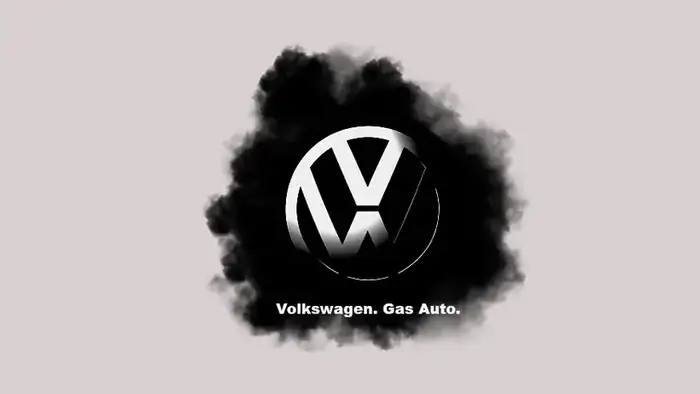

The fraud
In 2015 the US Environmental Protection Agency found that Volkswagen diesel cars contained 'defeat device' software: it detected when the vehicle was on a test rig, and enabled full emissions control; on the road, the controls were reduced, and nitrogen oxide emissions were up to forty times the legal limit.
Maps, diagrams and images


The consequences
Volkswagen admitted the use of the software, and the scandal spread to other manufacturers. The company has paid more than €30 billion in fines, settlements and recalls, several executives were charged, and two were imprisoned in the United States. A German court later found that the software was installed with the knowledge of senior management.
Documented: the software, its function and the emissions.
Documented: the admission and the penalties.
Documented: the convictions of executives.
Documented: the spread to other manufacturers.
The label: documented.
Why it is in the archive
Because it is the largest deliberate emissions fraud ever admitted, and because the mechanism was software — which is now the usual mechanism.
Open resources on this topic
- BookDieselgate : hoe de industrie sjoemelde en Europa faalde — Teffer, Peter, 1981- · 2017 (Internet Archive, free to read)
- BookDe berichten ‘Nederland ligt dwars bij aanpak dieselschandaal’ en dat een jaar na Dieselgate blijkt dat alle d — ['Nederlandse overheid', 'Dutch government', 'Tweede Kamer d · 2016 (Internet Archive, free to read)
- BookAntwoord op vragen van het lid Van Tongeren over “de Volkswagen dieselgate” — ['Nederlandse overheid', 'Dutch government', 'Tweede Kamer d · 2016 (Internet Archive, free to read)
- PapersOpen-access articles: DOAJ · PubMed Central · Internet Archive Scholar
- BooksPublic-domain and borrowable copies: Open Library · Project Gutenberg · Google Books
Cite this page
Momin, S. (2026). Dieselgate. The Larger World Archive. https://drsamonline.github.io/LARGE_GLOBE/dieselgate.htmlMomin, Sohil. “Dieselgate.” The Larger World Archive, 2026, https://drsamonline.github.io/LARGE_GLOBE/dieselgate.html.Momin, Sohil. “Dieselgate.” The Larger World Archive, 2026. https://drsamonline.github.io/LARGE_GLOBE/dieselgate.html.@misc{dieselgate2026dieselgate,
author = {Momin, Sohil},
title = {Dieselgate},
year = {2026},
howpublished = {The Larger World Archive},
url = {https://drsamonline.github.io/LARGE_GLOBE/dieselgate.html},
note = {Last reviewed 20 November 2026}
}Last reviewed 20 November 2026 · Corrections policy · this page is not peer reviewed
Sources for this page
- Wikipedia, “Volkswagen emissions scandal” — the caseen.wikipedia.org
- Wikipedia, “Defeat device” — the mechanismen.wikipedia.org
- Wikipedia, “Nitrogen oxide” — the pollutanten.wikipedia.org
- Wikipedia, “Emissions testing” — the process evadeden.wikipedia.org